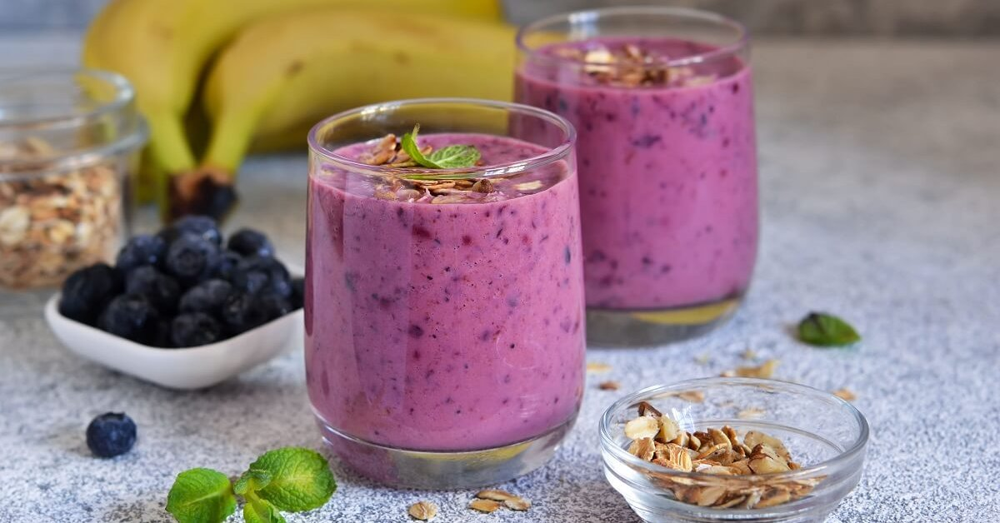

Смузи с кефиром и ягодами


Ингредиенты
- кефир 500 мл
- 1 спелый банан
- 160-200 гр замороженных ягод (черника, голубика, клубника)
- 100 мл растительного молока
- 1 ст.л мёда
Просто смешать все ингридиенты в блендере. Готово :)